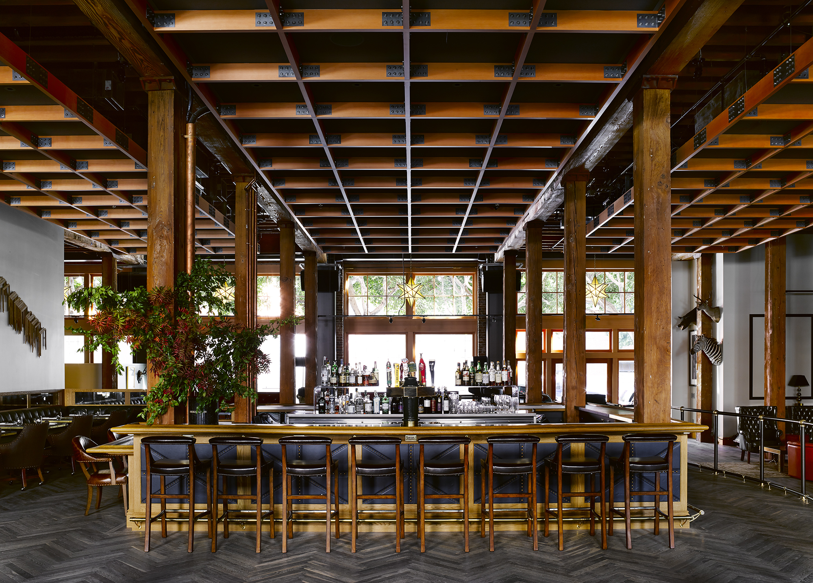
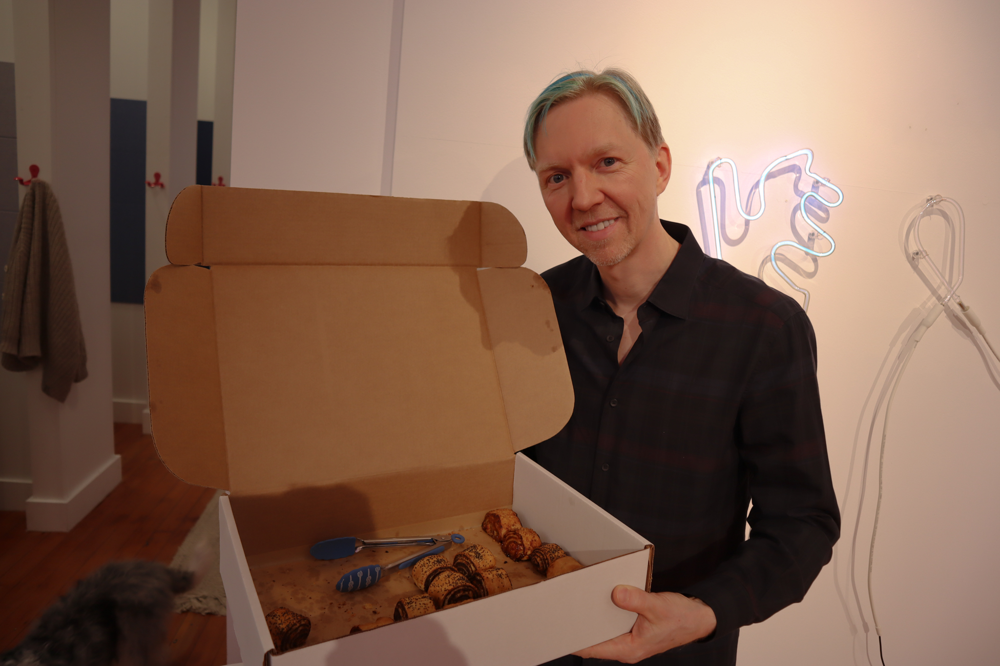
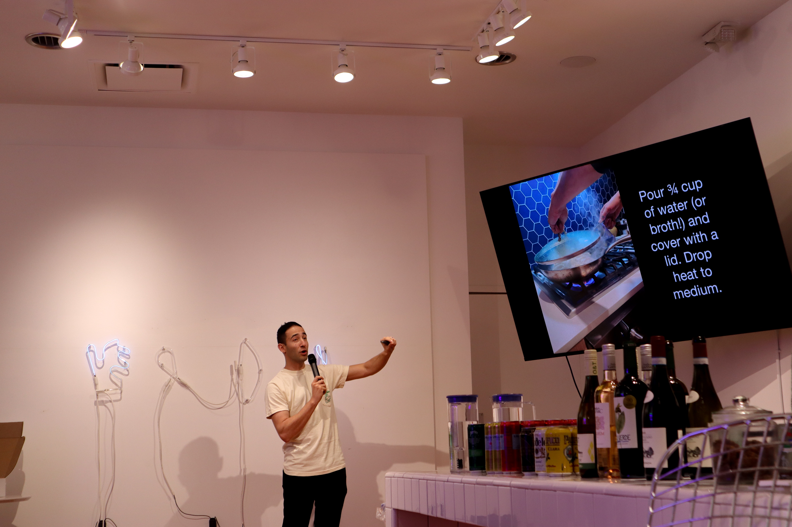

“I need to get out of my house, or I’m going to burn it down.”
Thomas Kennedy, Director of Membership at a social club in San Francisco called The Battery, said he’s heard phrases like this from his members. They pay $2,800 per year for access to The Battery’s facilities, including a restaurant, outdoor patio, gym, wine cellar and over 400 events per year. The greatest amenity to his members, however, might simply be the change in scenery.
Remote workers in San Francisco, who make up 32.5% of the city’s total workforce, may have found themselves in one of three places recently: Their bed. Their desk. Perhaps their couch. Then back to bed.
Enter San Francisco’s social and coworking clubs, each boasting various membership models that promise friendship, community, and most of all, a change of scenery. These “third spaces” offer a place for people to congregate and work.
In The Battery’s case, Kennedy describes the vibe as more “entrepreneurial” than coworking, although The Battery is in the process of converting its gym to an official coworking space due to member demand. The Battery enforces a strict electronics curfew, where all members must put away their electronics after 6 p.m., as well as rules against taking phone calls except inside a phone booth.
“It's not a space for you to go and sit at eight hours and just hammer away at work. It's a place where you can do work in between transitioning from one meeting to another or while you're waiting for your friends to show up,” Kennedy said.
Other spaces in San Francisco explicitly encourage using the venue as a coworking space during the day. The idea for one such space struck former WeWork employee Teddy Kramer as he walked by Starbucks one day and noticed that people weren’t only drinking coffee inside. Instead, they were working. He began to wonder why.
At Cafe Reveille on Polk Street, Alaura McGuire, a recent graduate of UC Law San Francisco, sat in a booth studying for the California bar exam for a similar reason.
“I feel like I get a little stir crazy when I'm stuck in an apartment all day,” McGuire said. “Usually I work from home, but I needed a change of scenery.”
McGuire says the atmosphere around other people in coffee shops allows her to refocus on work. McGuire is just one of many who frequent coffee shops as a way to escape the social isolation felt at home.
Kramer went on to found Neon, a coworking space in Cow Hollow that allows anyone to drop in to use its wifi, printing services, desk space, phone booths and drip coffee for $5 per hour or $20 per day. No long-term membership is required for access.
“I think Neon kind of reminds me of what I remember from old times when people used to connect. Now, it seems like everything is more disconnected with the work-from-home kind of environment,” said Sasha Zabelin, the founder of OutBaking in Berkeley, a bakery that employs Ukrainian refugees and supports them with its proceeds. He spoke about his business at a Neon event on Feb. 8.
Other community hubs offering coworking spaces and nighttime events are geared towards specific demographics. The Ruby, located inside a former winery from the 1880s in the Mission District, caters specifically towards nonbinary, transfeminine, and female-identifying creatives.
“We all know that we live in a world, in the arts and also just in general, where femme, nonbinary and BIPOC voices are not necessarily elevated or respected or acknowledged in the same way,” Director of the Ruby Peggy Lee said. “Giving these opportunities for us to come together is empowering.”
The Ruby, The Battery and Neon all cast their own nets for San Francisco professionals, appealing to a different array of people who ultimately seek flexibility and camaraderie within their workday and after hours.
Still, the business model of these spaces relies on an individual deciding to attend an event – and to decide to attend often means anticipating that the experience of socializing will make the trip worth it.
The problem? People systematically mispredict how bad a social interaction with a stranger will be.
“It doesn’t matter that the opportunity is there if people aren’t able to get over their own incorrect psychology and take advantage of the opportunity,” said Berkeley Haas Professor Juliana Schroeder, who studies social interaction and interpersonal processes.
Schroeder recalled an experiment she ran on Chicago trains in 2014, where she and her colleague Nicholas Epley offered commuters a gift card in exchange for either talking to the stranger next to them on the train that morning or keeping to themselves.
People predicted that the solitary commute would be more pleasant, and that fewer than half of their fellow commuters would want to talk to them. But in fact, the opposite was true: Commuters who were asked to socialize with other passengers reported having the most pleasant commute, and not a single person who tried to start a conversation reported being ignored.
“They think it's going to be bad. That's the prediction,” Schroeder said. “And we're like well, ‘Have you tried it?’ Like the research shows, you'll actually enjoy it.”
Still, widespread mispredictions about social interactions could impact people’s participation in a coworking club or attendance at a community event.
“I think it’s a cool idea and I think we need to create more of these spaces where people can engage with each other, but I do worry that unless you're kind of addressing psychology more directly, by correcting people's broken mental models, people may not take advantage of it,” Schroeder said.
When it comes to socializing, McGuire expressed her preference for coffee shops but is open to the idea of coworking spaces.
“I don't know if I would go there specifically to meet new people. But I've done it at cafes, where I’ll get a group of friends together and we’ll all go to the same cafe. That’s kind of helpful, in a sense, if [the coworking space] could facilitate that,” McGuire said.
Kramer, the CEO of Neon, has adopted the philosophy that the “neighborhood is the new downtown,” and that coworking and community spaces should center on the neighborhood. That includes coming with friends, or choosing to come on your own to work on a personal project.
“Everyone here [at Neon] has a side hustle,” Kramer said. “We have a tech worker who’s a leather maker, a financier who’s a chocolatier and makes homemade cookies from home. Everyone is chasing a dream. My hope is that Neon is a place that not only fosters it, but maybe lights that spark that says, maybe it’s time to quit that job of mine and take a risk.”
=======“I worry that people's missed predictions about whether some of these things will be worth their time might end up leading them not to go, you know, as much as they could.”
Schroeder conducted a study in 2011 about people’s willingness to interact with strangers in public settings and found that people enjoyed interacting with others on the train. In a Chicago Tribune op-ed, Schroeder encouraged a train car dedicated to social interactions. However, she said there was a lot of pushback.
“They think it's going to be bad. That's the prediction,” she said. “And we're like well, ‘have you tried it?’ Like the research shows, you'll actually enjoy it.”
“Unless you're kind of addressing psychology more directly, by correcting people's broken mental models, people may not take advantage of it and in fact that business might not succeed,” she said.
Schroeder may be onto something here. Alaura Mcguire, a 26 year old recent graduate of University of California San Francisco Law School, expressed her preference for coffee shops but is open to the idea of coworking spaces.
“I don't know if I would go there specifically to meet new people. But like, I've done that at cafes, we'll get like a group of friends together and we'll all go to the same cafe. I feel mostly I stay at coffee shops just because there's food accessible that I don't have to leave the cafe at all.”
“[Coworking spaces] sound interesting. I'd have to do more research like what the fee is and because coffee shops are obviously free besides the food that you eat and drink.”
Ellie Kennedy, a 23 year old product designer, echoes Mcguire’s preference of coffee shops.
“I've never thought about [coworking spaces] just because my remote days aren't that frequent. And I kind of treat this [going to Cafe Reveille] as like my weekly treat to get my favorite drink and just kind of hang out in a coffee shop.”
“I have heard of a couple [coworking spaces]. But I know that there's also some social gathering spaces that I've heard about recently, especially in Hayes Valley. They’re kind of coworking but they also hold events and stuff like that. So that's interesting to me. I think if I worked remotely more than one day a week, and sometimes I can't even work remotely at all, I might be more inclined because I feel I'm gonna break up the routine a little bit. But as it is, I feel like the coffee shop still feels special enough that I don't really feel the need but I know that they're out there somewhere.”
Catherine Gibson, a 23 year old consulting analyst, chooses to alternate between her office and coffee shops.
“I have heard of coworking spaces. I know there's one on Union Street called Neon and then there's more formal ones. But I personally wouldn’t join them because I have a really great office here in San Francisco.”
Anthony, a 38 year old working in the insurance industry, would consider if the location was close.
“If it was close to my home in Oakland I would consider it, maybe a day or two a week, to mix things up.”
Cost, location and work schedule were the most common factors when considering whether to join a coworking space. Most also seemed content with working at coffee shops and did not feel compelled to experiment with new spaces.
“Everyone here has a side hustle,” Kramer, CEO of Neon, said. “We have a tech worker who’s a leather maker, a financier who’s a chocolatier and makes homemade cookies from home. Everyone is chasing a dream. My hope is that Neon is a place that not only fosters it, but maybe lights that spark that says, maybe it’s time to quit that job of mine and take a risk.”
>>>>>>> parent of 62c4075 (Merge branch 'main' of https://github.com/nadiabidarian/coworking-reimagined)